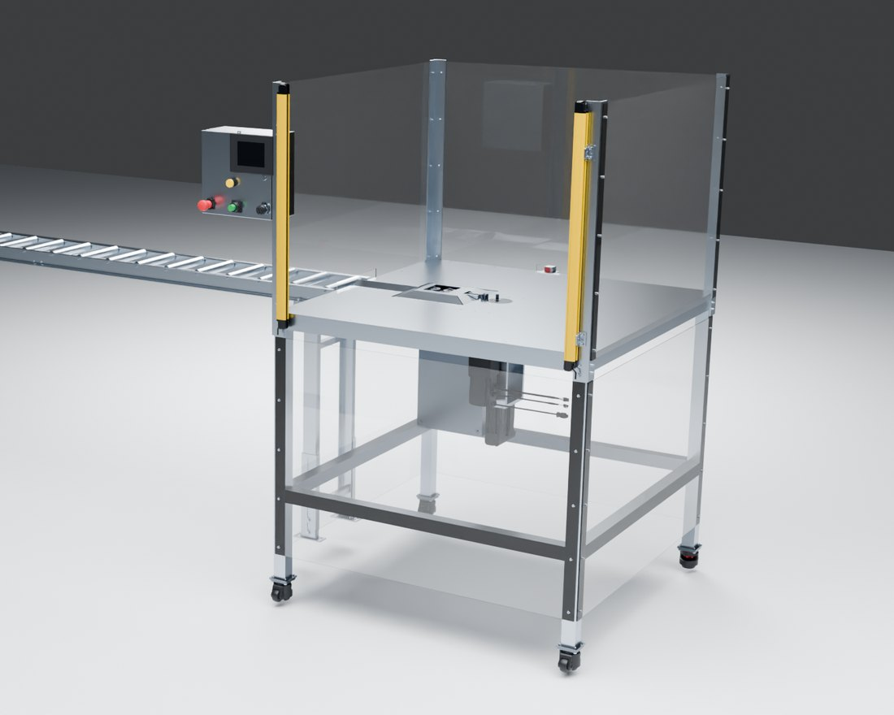
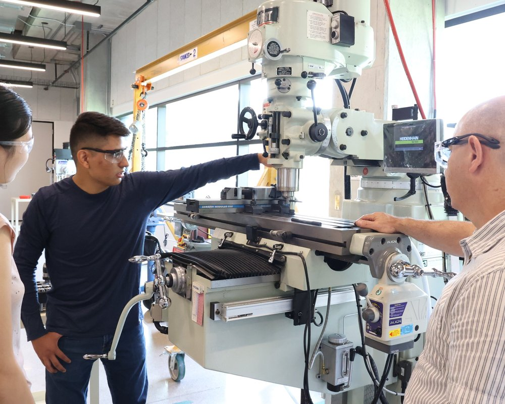
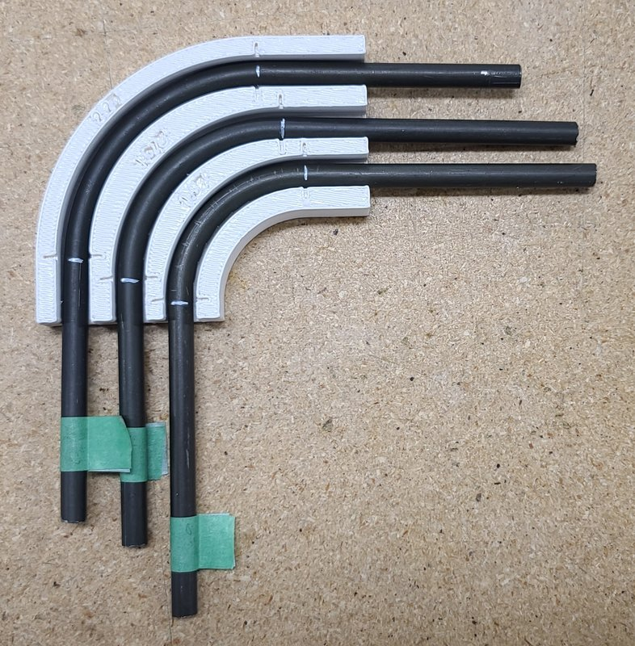
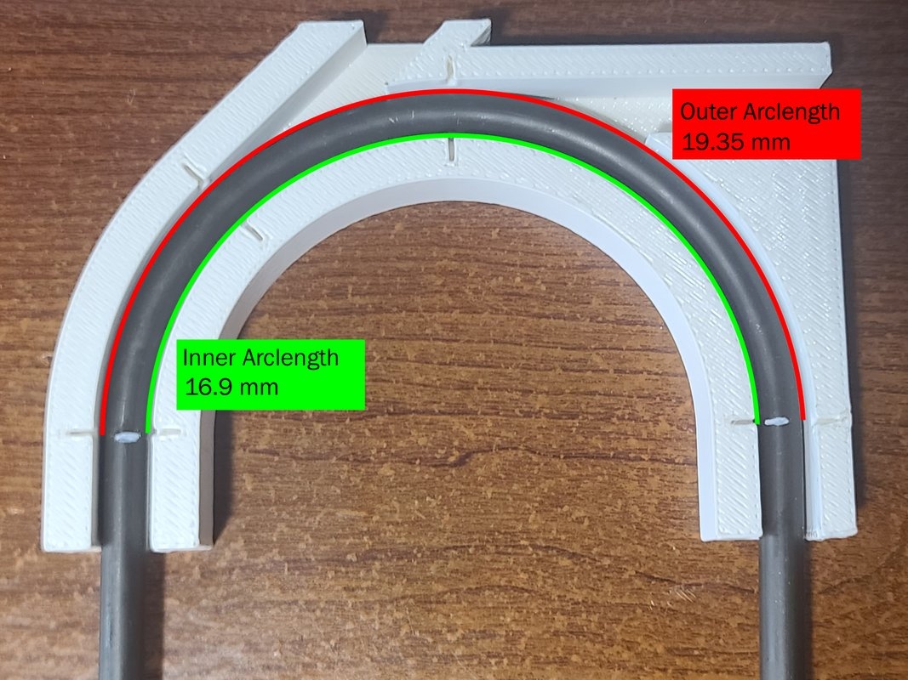
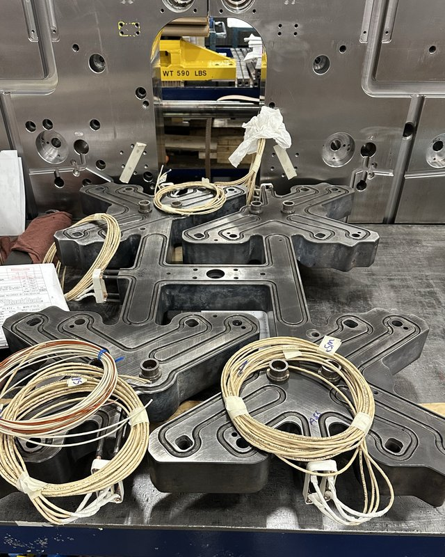
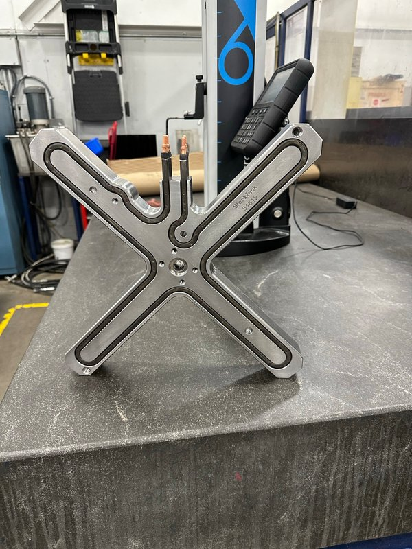

This research and development project was done in collaboration with Stack Teck, a major plastic injection molding company. The client was looking to develop a complete design for an automated system that shapes heating elements for their hot runner systems. The solution had to accommodate different sizes and bend radii.
The process started with exploring different ideas, prototyping them, and systematically selecting the best based on quantitative data. Various tests were developed to capture material properties such as forces, spring rates, and elongation. The captured data enabled an informed design.
Since the client needed to accommodate various sizes, flexibility was important. Our goal was to accommodate this while keeping mechanical complexity down.
The chosen solution accommodates any size by shaping the element to the required curve in intervals. This simplified the components, because no specialized tooling is needed for each size. It also future-proofs the machine, which can accommodate any new radius, and it drastically simplifies feeding the material into the system.
A Critical Failure Mode identified was deviation from the desired geometry on the finalized product. Factors influencing this included material springback after bending, mechanical looseness, and inherent differences from approximating a curve with straight-section intervals.
Tests were developed to measure the springback rates of the material at various angles. Materials at the bending zone were hardened and tight-fitted to mitigate deformation across cycles. The length of the intervals was calculated and tested using a manually operated equivalent process. Lastly, a current-based sensing mechanism was implemented to verify the correct position of the heating element after being shaped. After optimizing the parameters, the results achieved less than 1% deviation from the desired geometry, well within tolerances.






We delivered the client a complete design package, ready to pass a Pre-Start Health and Safety Review (PSR). The system met all of the client’s needs while achieving good accuracy and run time. The client took the collected data, design, and control methodology and continued developing the system.